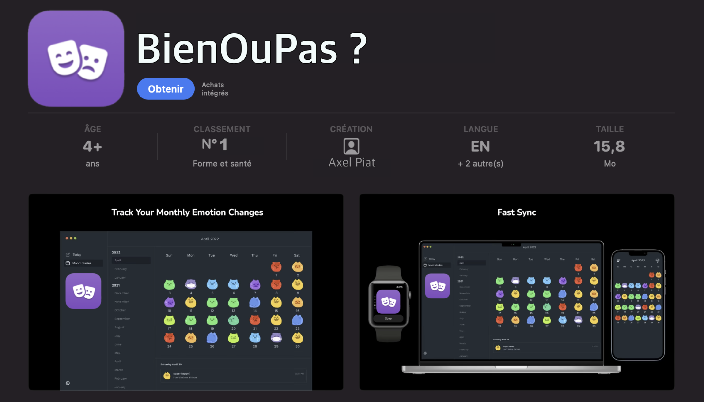
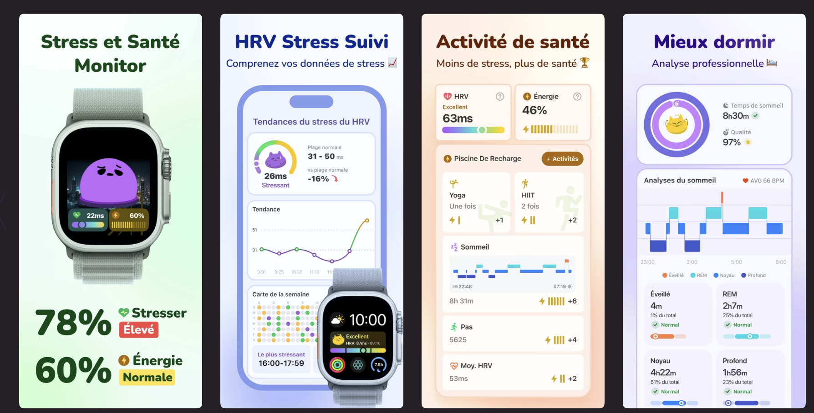
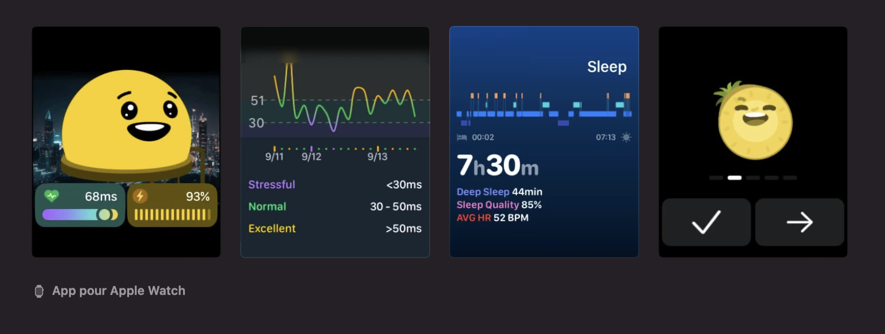

A Propos de nous :
BienOuPas ? est une société à but non lucratif. Cela signifie que nous ne poursuivons pas un objectif financier comme priorité absolue. Notre mission première est de vous offrir un service de qualité – ou, parfois, simplement un service qui répond à vos attentes, tout en restant authentiques et sincères dans notre démarche.
Le fondateur de BienOuPas ?, Or erator, est un véritable touche-à-tout. Il joue un rôle central au sein de notre organisation, en assurant la communication audiovisuelle, la programmation de notre application et de notre site web, et même en jonglant avec des préoccupations aussi variées que "la pluie et le beau temps". Son engagement total reflète les valeurs de polyvalence et de dévouement qui animent notre projet.
Nous ne faisons pas partie des géants technologiques de la Silicon Valley, souvent désignés par l'acronyme GAFAM. Cependant, nous sommes fiers de représenter une alternative locale en tant qu’entreprise de la
Silicone Vallée de l’Hérault (S.V.H). Avec la S.V.H, notre ambition est de stimuler la compétitivité, de favoriser l’innovation et de créer des opportunités pour que l’Hérault puisse se démarquer sur la scène nationale, et même internationale. Nous croyons fermement que ce territoire regorge de potentiel et qu’il mérite de rayonner bien au-delà de ses frontières.

Notre application : BienOuPas ?
BienOuPas est l’application phare – et actuellement la seule – développée par notre entreprise. Elle propose une manière simple, intuitive et amusante de suivre votre humeur tout au long de la journée. Grâce à une échelle allant de "Bien" à "Pas Bien", vous pouvez noter votre état émotionnel à n'importe quel moment, où que vous soyez. L’application compile ensuite ces données pour générer des résumés détaillés de votre humeur, que ce soit à l’échelle quotidienne, hebdomadaire, mensuelle ou même annuelle. Vous pouvez ainsi avoir une vision globale et précise de votre bien-être, analysée jusque dans les moindres détails : heures, jours, semaines... bref, tout le temps !
Pour les utilisateurs à la recherche de fonctionnalités supplémentaires, l’application BienOuPas propose un service Premium pour seulement 0,99 $ par mois (les conditions d'utilisation complètes sont disponibles directement sur l'application). Cette offre vous permet de profiter d’outils encore plus avancés pour comprendre et améliorer votre bien-être au quotidien.
À propos de vos données :
Nous accordons une grande importance à la gestion sécurisée de vos informations personnelles. Toutes les données collectées sur votre humeur sont stockées sur nos serveurs localisés dans la Silicone Vallée de l’Hérault (S.V.H.), à proximité du fleuve Hérault. Ces serveurs exploitent une technologie innovante appelée water-cold, conçue pour réduire leur empreinte écologique. Cette méthode consiste à refroidir les serveurs à l’aide d’un courant d’eau naturel – dans notre cas, celui de l’Hérault. Cette technologie, développée et brevetée en S.V.H., reflète notre engagement en faveur de solutions durables et respectueuses de l’environnement.


